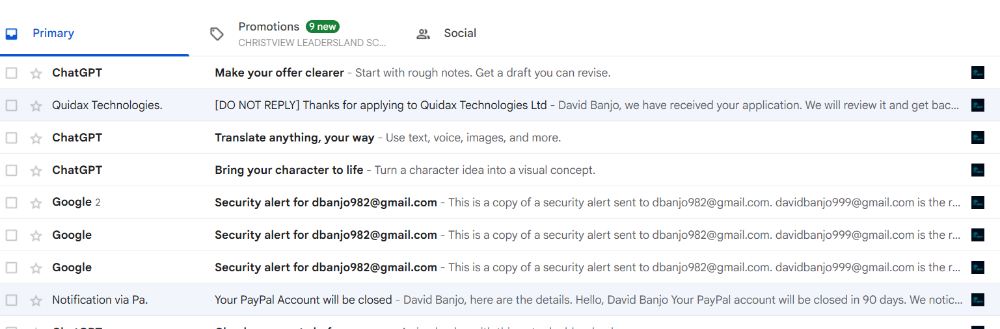
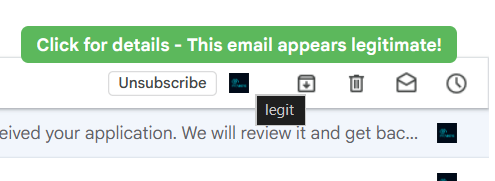
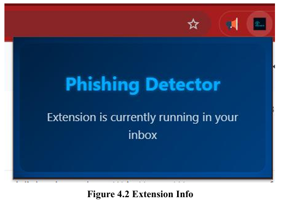
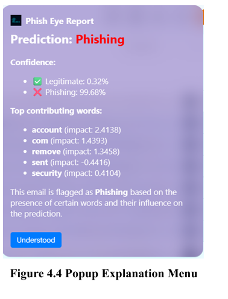

A browser extension that sits quietly inside my inbox and tells me, email by email, how likely it is to be phishing — and shows its work.
I built PhishEye as my final-year project, and the question behind it was a simple one: most of us are told to "watch out for phishing emails," but almost nobody is told what in an email actually gave it away. I wanted something that would not just make a call, but show its reasoning, in plain sight, right where the email already lives.
So instead of a scanner you run separately, PhishEye is a small extension that sits inside the inbox itself. Next to every email in the list, it drops a small indicator — the dark square you can see sitting beside each message below. Hover over it, and it gives you an instant read: legitimate, or worth a second look.



Under the hood, PhishEye runs on a classical NLP pipeline — a Logistic Regression model, with XGBoost explored alongside it — trained on a labelled set of phishing and legitimate emails. As best as I recall, it worked from what was already visible in the inbox view — the subject line and the message preview — rather than reaching into the full email body through the Gmail API, which kept it lightweight and kept it out of anything more sensitive than what you'd already see scrolling past.
The part I cared about most wasn't the prediction — it was the explanation. Click through on an email and you get a full Phish Eye Report: a confidence split between "Legitimate" and "Phishing," and underneath it, the actual words that moved the model's decision, each with its own weight.

That's the explainable-AI piece: rather than a black-box "99% phishing" verdict, PhishEye shows you that words like account, remove, and security are exactly the kind of urgency-and-credential language phishing emails lean on — and lets you judge the reasoning yourself instead of just trusting the number.
Why it matters to me: this project is where my interest in security and my interest in building things actually met. It's also the clearest line I can draw between "I can explain a vulnerability" and "I can ship something that protects someone from one."